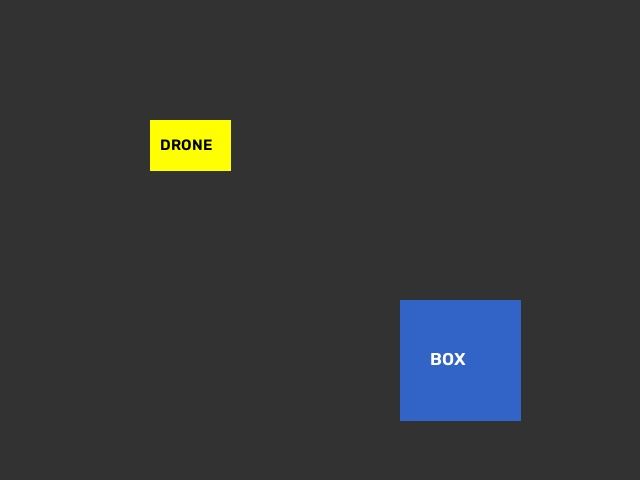

Custom Object Dataset Preparation & Fine-Tuning
Demonstrates creating a custom dataset from video frames, normalizing coordinates to YOLO standard format, and initiating model training.

from yolozone import DatasetHelper, ObjectTrainer
import cv2
# 1. Setup dataset for custom items
dataset = DatasetHelper("warehouse_dataset", classes=["drone", "package"])
# 2. Add annotated samples (pixel bounding boxes: x1, y1, x2, y2)
cap = cv2.VideoCapture("videos/training-sample-01.mp4")
while cap.isOpened():
ret, frame = cap.read()
if not ret:
break
dataset.add_sample(frame, [("drone", (150, 100, 230, 160))])
cap.release()
# 3. Train model
trainer = ObjectTrainer(base_model="yolov8n.pt", dataset=dataset)
results = trainer.train(epochs=25, imgsz=640, device="cpu")
print("Trained model:", results["best_weights"])